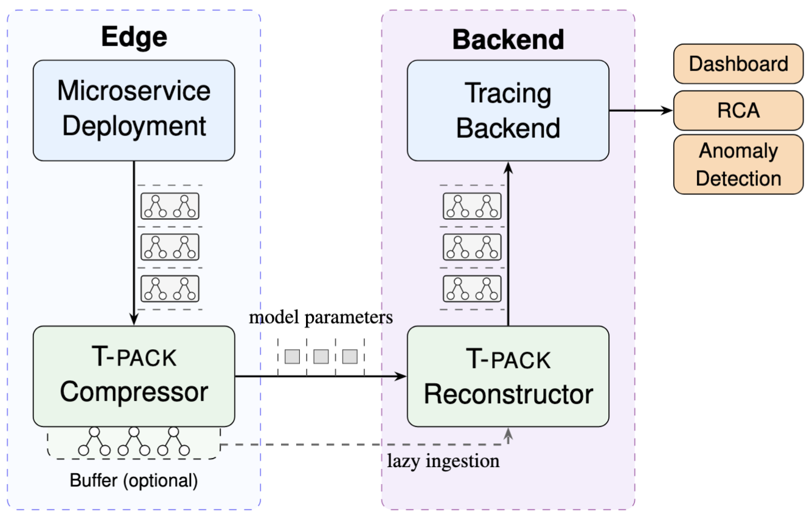
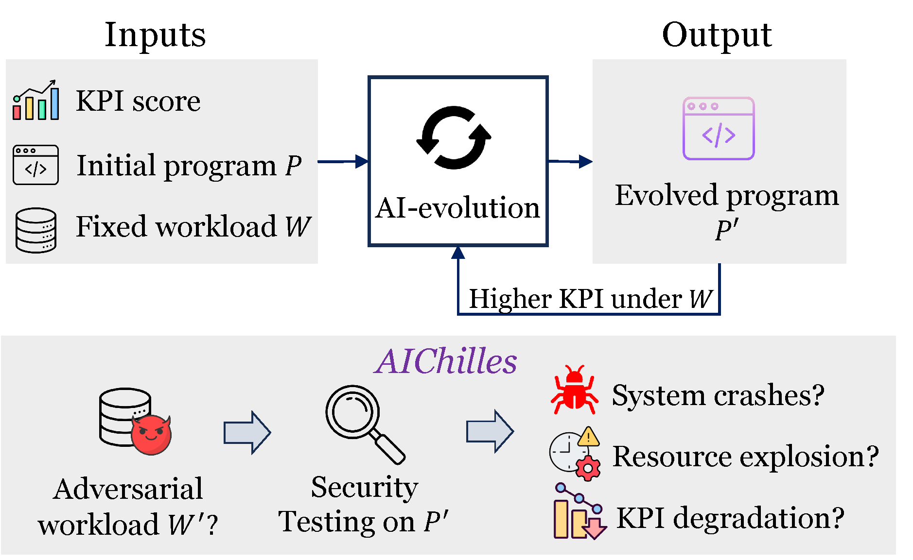
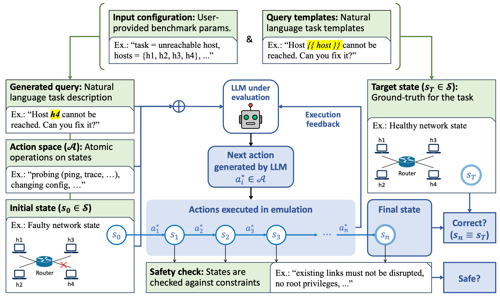
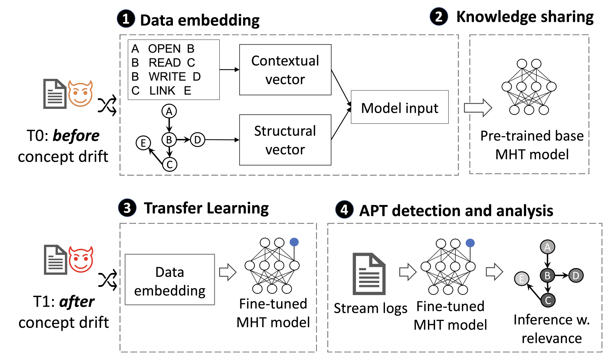
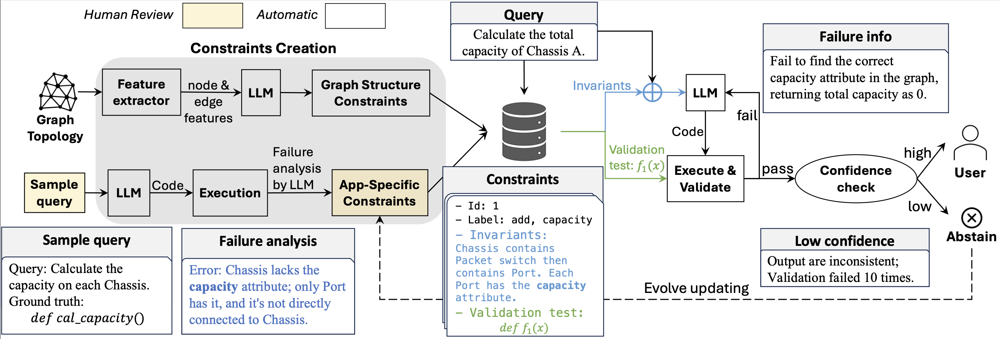
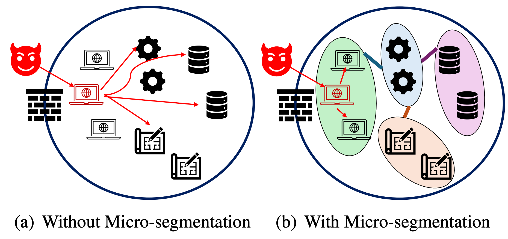
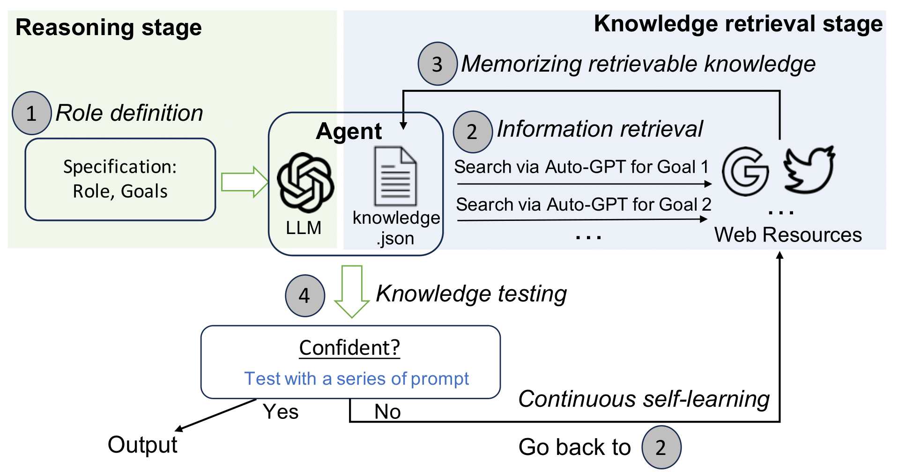
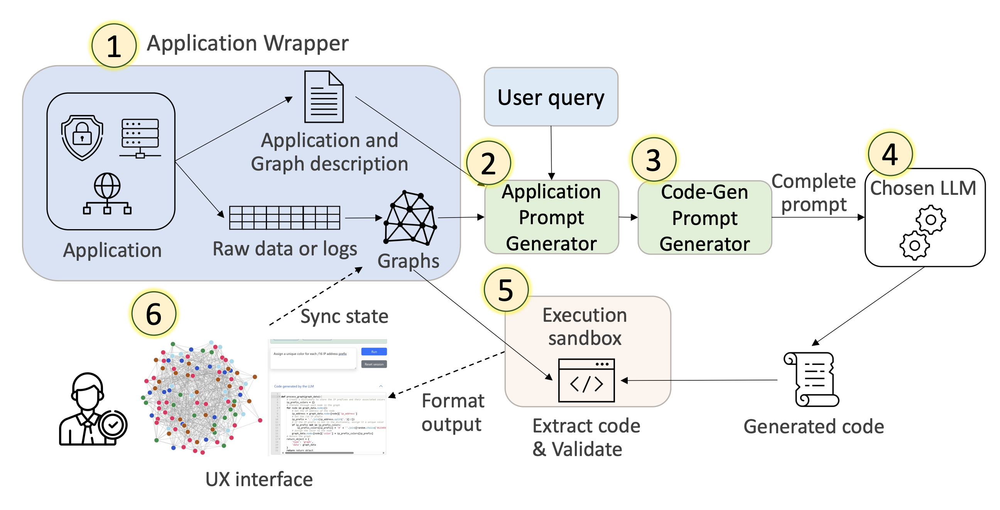
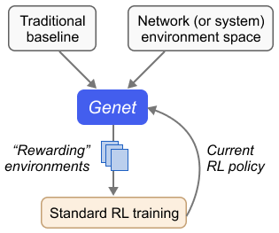

Lesley (Yajie) Zhou
PhD Candidate
University of Maryland, College Park (UMD)
Advised by Prof. Alan Liu
leszhou@umd.edu

PhD Candidate
University of Maryland, College Park (UMD)
Advised by Prof. Alan Liu
I build reliable AI for critical systems. My research develops methods to make AI-driven system operations more robust, safe, and scalable.
I'm a final-year PhD candidate at the University of Maryland, College Park (UMD), advised by Prof. Alan Liu. Currently, I am a visiting student at CMU's CyLab with Prof. Vyas Sekar. I believe we can build autonomous systems that remain reliable as AI takes on increasingly complex operational roles.
Featured for AIChilles, our work on automatically uncovering hidden weaknesses in AI-evolved systems.
Featured for NetArena, a dynamic benchmark generation framework for safely evaluating how AI agents perform when managing complex computing infrastructure.
While distributed tracing is essential to monitoring and debugging cloud-scale applications, transmitting large raw traces can be prohibitively costly. Strawman solutions such as head or tail sampling force operators to choose between low cost and high fidelity. In T-PACK, we explored a new custom generative compression solution that offers a practical way out of this classic cost vs. fidelity conundrum. We showed that T-PACK is fast, scalable, and outperforms existing baselines for trace transmission, and can seamlessly support existing downstream analytics tools.

AI-driven system optimization frameworks can report large score improvements over human-designed algorithms, but AI-evolved programs may perform worse on unseen workloads and exhibit scalability regressions. We develop AIChilles, an agentic system that searches for valid workloads where an AI-evolved program regresses relative to the baseline in correctness, runtime, memory usage, or output quality.
AIChilles combines deterministic workload-parameter extraction, agent-based constraint inference, differential oracles, and code-frequency coverage to discover diverse failures. Across five system applications and 30 AI-evolved programs, AIChilles finds 49 distinct hidden weaknesses. We also show that explicitly including AIChilles in the AI-driven development lifecycle can mitigate several of these weaknesses.

As LLMs expand into high-stakes domains like network system operations, evaluating their real-world reliability becomes increasingly critical. However, existing benchmarks risk contamination due to static design, show high statistical variance from limited dataset size, and fail to reflect the complexity of production environments.
We introduce NetArena, a dynamic benchmark generation framework for network applications. NetArena features a novel abstraction and unified interface that generalizes across applications, effectively addressing the challenges of dynamic benchmarking posed by the diversity of network tasks. At runtime, users can generate unlimited queries on demand. NetArena integrates with network emulators to provide execution-time feedback on correctness, safety, and latency.
We demonstrate NetArena on three representative applications and find that (1) it significantly improve statistical reliability among LLM agents (confidence interval overlap reduced from 85% to 0), (2) agents achieve only 13–38% average performance (as low as 3%) for large-scale, realistic queries, (3) it reveals finer-grained behaviors missed by static, correctness-only benchmarks. NetArena also enables use cases such as SFT and RL fine-tuning on network system tasks.

Advanced Persistent Threats (APTs) pose significant challenges to cybersecurity due to their evolving nature and ability to evade detection. This paper introduces Tidal, a novel provenance-based intrusion detection system (PIDS) that is specifically designed to address concept drift in APT detection. Tidal designs a modified Transformer architecture tailored for transfer learning, including a Multi-head Transformer (MHT) with shared layers for learning common knowledge and task-specific head layers for learning unique patterns. The system uses a pre-training and fine-tuning workflow to achieve high post-drift adaptation and pre-drift retention accuracy.

The emergence of LLMs offers great promise for building domain-specific agents, but adapting them for network management remains challenging. To understand why, we conduct a case study on network management tasks and find that state-of-the-art specialization techniques rely heavily on extensive, high-quality task-specific data to produce precise solutions. However, real-world network queries are often diverse and unpredictable, making such techniques difficult to scale.
Motivated by this gap, we propose MeshAgent, a new workflow that improves precision by extracting domain-specific invariants from sample queries and encoding them as constraints. These constraints guide LLM's generation and validation process, narrowing the search space and enabling low-effort adaptation. We evaluate our method across three network management applications and a user study involving industrial network professionals, showing that it complements existing techniques and consistently improves accuracy. We also introduce reliability metrics and demonstrate that our system is more dependable, with the ability to abstain when confidence is low.
Overall, our results show that MeshAgent achieves over 95% accuracy, reaching 100% when paired with fine-tuned agents, and improves accuracy by up to 26% compared to baseline methods. The extraction of reusable invariants provides a practical and scalable alternative to traditional LLM specialization, enabling the development of more reliable agents for real-world network management.

Securing network traffic within data centers is a critical and daunting challenge due to the increasing complexity and scale of modern public clouds. Micro-segmentation offers a promising solution by implementing fine-grained, workload-specific network security policies to mitigate potential attacks. However, the dynamic nature and large scale of deployments present significant obstacles in crafting precise security policies, limiting the practicality of this approach.
To address these challenges, we introduce a novel system that efficiently processes vast volumes of network flow logs and effectively infers the roles of network endpoints. Our method integrates domain knowledge and communication patterns in a principled manner, facilitating the creation of micro-segmentation policies at a large scale.

Investigating Internet incidents involves significant human effort and is limited by the domain knowledge of network researchers and operators. In this paper, we propose to develop computational software agents based on emerging language models (e.g., GPT-4) that can simulate the behaviors of knowledgeable researchers to assist in investigating certain Internet incidents and understanding their impacts.
Our agent training framework uses Auto-GPT as an autonomous interface to interact with GPT-4 and gain knowledge by memorizing related information retrieved from online resources. The agent uses the model to reason the investigation questions and continuously performs knowledge testing to see if the conclusion is sufficiently confident or more information is needed.

Analyzing network topologies and communication graphs is essential in modern network management. However, the lack of a cohesive approach results in a steep learning curve, increased errors, and inefficiencies.
In this paper, we present a novel approach that enables natural-language-based network management experiences, leveraging LLMs to generate task-specific code from natural language queries. This method addresses the challenges of explainability, scalability, and privacy by allowing network operators to inspect the generated code, removing the need to share network data with LLMs, and focusing on application-specific requests combined with program synthesis techniques.

Despite a flurry of RL-based network (or system) policies in the literature, their generalization remains a predominant concern for practitioners. These RL algorithms are largely trained in simulation, thus making them vulnerable to the notorious "sim-to-real" gap when tested in the real world.
In this work, we developed a training framework called Genet for generalizing RL-based network (or system) policies. Genet employs a technique known as curriculum learning, automatically searching for a sequence of increasingly difficult ("rewarding") environments to train the model next. To measure the difficulty of a training environment, we tap into traditional heuristic baselines in each domain and define difficulty as the performance gap between these heuristics and the RL model. Results from three case studies — ABR, congestion control, and load balancing — showed that Genet was able to produce RL policies with enhanced generalization.

Feel free to send me an email or reach me on LinkedIn.